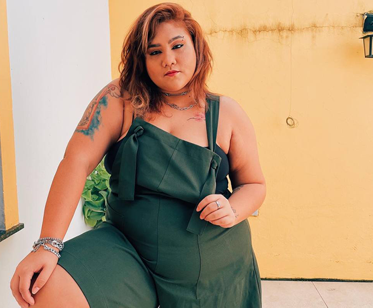
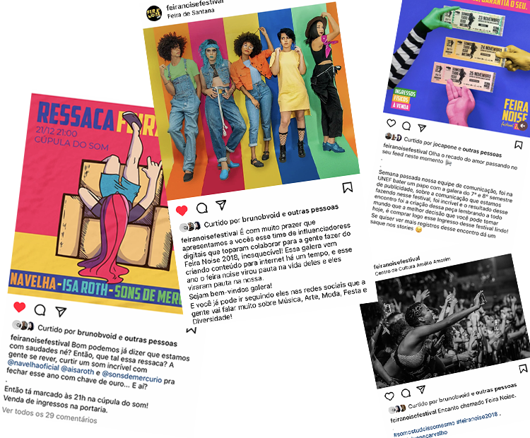
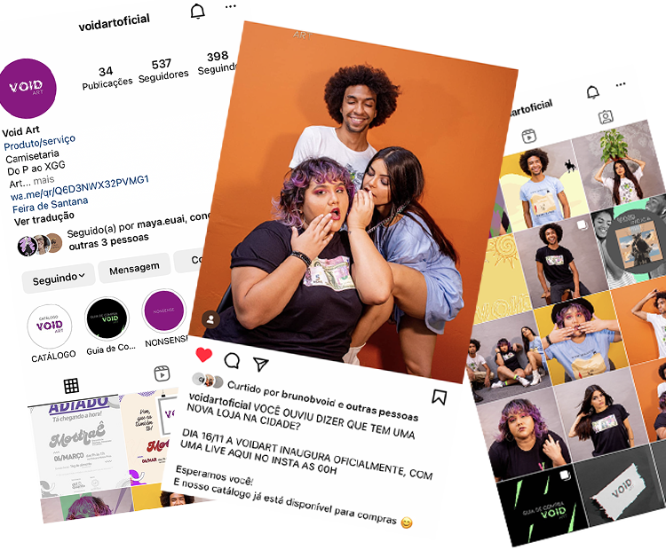
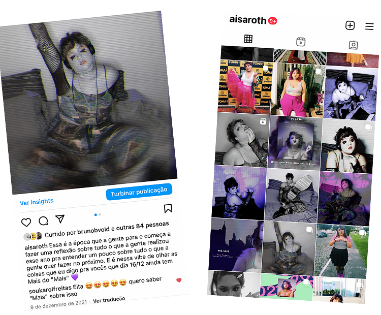

Sobre Mim

Oie! Eu sou Raisa Cruz aka Isa Roth mas isso é outro assunto ;) hoje eu quero apresentar a vocês meu trabalho na área de Publicidade e Propaganda mas vamos do início pra vocês entenderem como tudo isso aqui nasceu. Sou formada em Licenciatura em Música pela Universidade Estadual de Feira de Santana (UEFS) e essa minha trajetória nas artes me deu oportunidades de desenvolver habilidades na área de comunicação; hoje eu sou Graduanda em Publicidade e Propaganda na Unidade de Ensino Superior em Feira de Santana (UNEF) e já acumulei algumas experiências como Social Media, Criadora de Conteúdo e estratégia pra redes sociais e também com marketing de influência para Festivais, Artistas Independentes e Lojas. Em Resumo, eu sou uma artista gente! Sou multifacetada, sou aquela que tá pesquisando, desenvolvendo estratégia, escrevendo, gravando, cantando, narrando, dançando, dando close, o famoso pau pra toda obra e nesse portfólio vocês vão conseguir ver todas as minhas versões.
Contatos
- Email: rayccerqueira@gmail.com
- Telefone Whatsapp/Telegram: (75) 991030795
- Instagram: @aisaroth
- Tiktok: @aisaroth
FEIRA NOISE FESTIVAL - 2018
Social Media - Marketing de Influência
De Agosto a Dezembro de 2018 eu pude trabalhar com a equipe de comunicação do Feira Noise Festival 2018. Esse evento é o Maior Festival de Música Independente do Interior da Bahia e essa edição trabalhou com o tema de afirmação de identidades “Somos Tudo Isso Mesmo”; fui convidada para desenvolver um time de influenciadores da cidade além de colaborar com o gerenciamento das redes sociais e colaborar na criação de estratégias de venda e divulgação do festival.

VOID ART - 2020
Social Media - Content Creator - Content Strategy
Em 2020 Bruno Bastos desenvolveu uma marca de estampas de camisas e eu pude desenvolver junto com ele uma estratégia de divulgação para a sua primeira coleção de camisas chamada Coleção START. Estive junto durante todo o processo de criação do produto, e pude contribuir com estratégias pra alcançar e atender um público diverso, com atenção a diversidade de numeração das camisas que era uma preocupação de interesse do cliente. Fiz toda produção de conteúdo, desde o ensaio fotográfico até a publicação, pensamos em uma embalagem sustentável, e também trabalhei um pouco de marketing de influência criando um press kit e entregando para influenciadores com potencial de alcançar clientes. Toda a coleção foi vendida.

SINGLE - VOU FAZER (CYBER LO-FI EDIT)
Social Media - Content Creator - Content Strategy
Em 2021 eu lancei um EP com 5 músicas autorais chamado MAIS que foi realizado com o apoio da Lei Aldir Blanc. No final do ano entreguei por conta própria um remix de uma das faixas e aqui eu fiz a minha própria divulgação. Essa faixa distoa um pouco do tom do EP, é uma música de andamento mais lento, com o vocal mais dramático e por isso para a capa e divulgação usei como conceito a inversão do colorido que foi o álbum, com alusão aos pixels, Glitch e elementos “Cyber” junto com uma linguagem de gatilhos na legenda que revelasse uma camada mais densa da música que já era conhecida em outra versão.
